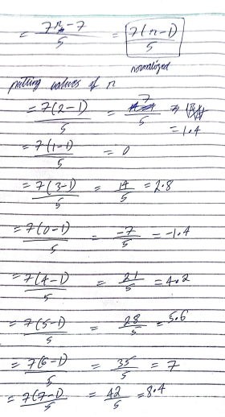
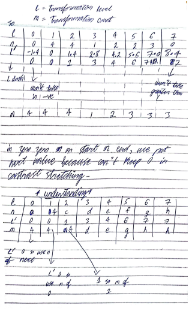
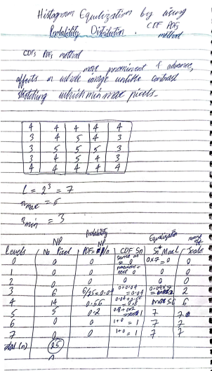
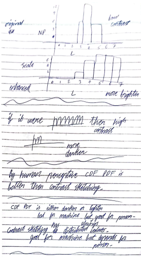
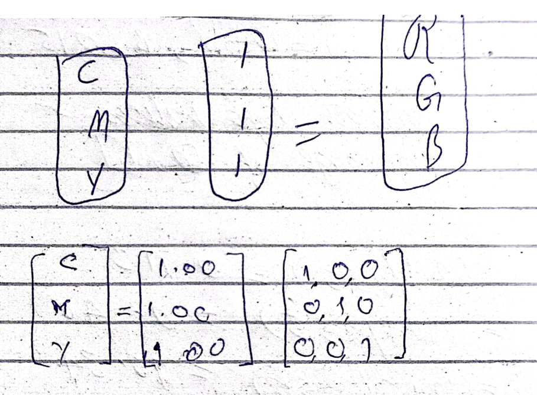
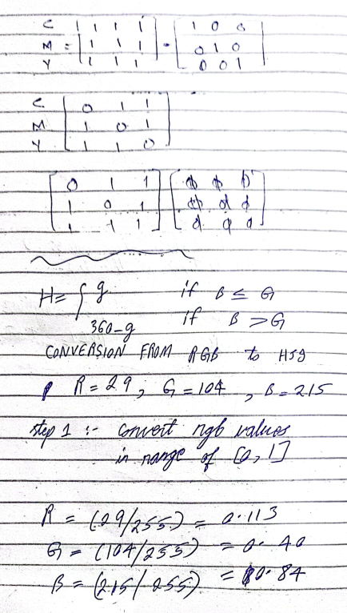
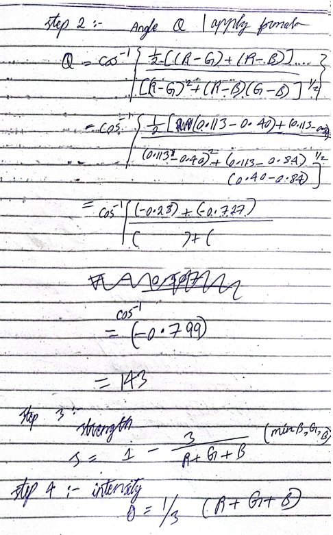

Basic Introduction of the Course Title
Revise is a must and task can happen anytime.
division and multiplication of matrices?
How an Image is seen?
Humans: -
Objects - > Attributes - > Classifications
Machines: -
Values
spatial co-ordinates?
how many bits and bytes in 0 1?
Pixel Value? how many rows and columns in 1920 * 1080?
0 for black, 1 for bright / white.
Segmentations detect an object and do processing?
Levels of Processing
| Low | Mid | High | |
|---|---|---|---|
| Input | Image | Image | Attribute |
| Output | Image | Attribute | Understanding |
Scope of the Course
The subject deals with static images only, video related concepts are done in Compute Vision.
Quiz
Applications of Digital Image Manpulations?
Sampling
Making / Plotting dots on x and y axis to make a graph to check variations in it.
Quantization
Values of dots
Making of Colors
Binary (0,1) is used for black and white colors.
8 bit values are used for grey colors. 28 = 256 levels
Important Questions
no. of bits in an image (matrix)?
what gray level?
12th Oct 2023
RGB = Red, Green, Blue, each has its own matrix.
some activites
Image Acquisition (Week 1 Lec 2B)
Window Size => 1x1
Types of Affects
1 pixel affects 1 pixel
3x3 pixel affects 1 pixel
whole image affects 1 pixel
S = T(r) = (L-1) - r
here, L = levels, 2 7 = 7 levels
Quiz next class
Image
| 23 | 50 | 100 | 25 |
| 55 | 80 | 100 | 25 |
| 70 | 90 | 200 | 190 |
| 60 | 35 | 190 | 80 |
Negative of Image
S = T(r) = (256 - 1) - 23
r / value to be converted = 23
L / Levels = 256 because we must keep it higher to the maximum value which in this case is 200. 2 7= 128 which is smaller so 28 = 256
Low Amplitude => higher Amplitude.
high Amplitude => lower
lower Amplitude means darker colors and higher Amplitude means brighter colors.
0 is black, 255 is white
x = 0 log (1 + r)
if r < 1: -
Power Law Transformation == Log Transformation
r == log T0
Power Law Transformation is used in gamma correction.
26th Oct 2023
what is digital image processing?
what is analog processing?
what are the domains of DIM? spatial & frequency
how can the image be enhanced? pixel, local and global
Image Scaling (a.r)
it is done using pixel level (1 pixel affects 1 pixel)
| Log Transformation | Image Negative |
|---|---|
| affects the image but isn't opposite | totally opposite |
Power Law
Formula:- crλ , where c is the constant and r is the value of the row and lamba represents the Power Law which can either be greater than, equal to or smaller than 1. If r > 1, it expands higher value and compress the lower value.
Log Transformation
Formula:- c log (1 + r) , where c is a constant and r is the value of row.
when r < 1, Power Law===Log Transformation
In this condition, it expands the lower value and compress the higher value.
It divide into pieces for image manipulation.
Threshold
make a cut, put some values up and some down.
Noise Formula
f (x,y) + n (x+y) , where f (x,y) is the original value of the image while n (x+y) is the extra information which takes place due to problems in illumination while using the device.
Image Subtraction
It's used for the identification of errors in an image.
Variants / Problems with Image Subtraction?
How negative values are handled? 1) use absolute to make them positive 2) add 255 and divide by 2 ?
2nd Nov 2023
Noise Formula
g(x,y) = f(x,y) + n(x,y) , where f represents the original image while n represents the noise (extra information), the image has.Extracting the original image from the one having noise in it
AVERAGING, if we have an image with sampling 6X6, make it noised and take its average.
| Image Subtraction | Image Negative |
|---|---|
| happens between 2 images | happens with only 1 image |
| has problems like value out of range or in negative | has no problems, just follow the simple formula |
| simple subtraction of the images | (L-1) - r , where L is the level and r is the value to be replaced. |
If we have problem in image subtraction, we add 255 in it and divide the whole by 2 which is known as AVERAGING.
Image Scaling
Here, we perform the operations of multiplication for the enhancement.
| AND | OR |
|---|---|
| r X 1 = r | r + 0 = r |
Affect of AND and OR Operations on an Image
| r X 0 = 0 | r + 1 = 1 |
|---|---|
| expands brighter and compress lower. | |
| affects higher pixel | affects lower pixel |
Gray scale has variations from 0 to 255 but Black and White has no variations except for 0 and 1.
PIXEL OPERATIONS ENDS HERE! ! ! Now we will use Local Operations.
LOCAL ENHANCEMENT THROUGH SPATIAL FILTERING
In local enhancements, we use masks like
Size means that the number of pixels which are required to make an impact on a single pixel.
Smallest Size of a Filter, Kernal or a Window = 1X1
Size of resultant image after padding is same as that of original...
add zero padding instead of discarding...
In which case, we get lines at edges? Zero Padding
In which case, we get smoothing effect? Replica
Order Statistics Filtering
Here, we check the smallest value out of 9 values of the local kernal and replace the value r with that minimum value.
Here, we check the largest value out of 9 values of the local kernal and replace the value r with that largest value.
Here, we sort the values of local kernal in an ascending order and pick the value at the center as its median and replace the value r with that median value.
Salt and Pepper Noise
dots (black and white) in picture...
where salt means white and pepper means black.
At most cases, median filtering has better results on the image but it depends from image to image.
Smaller the size of the masking, better will be the accuracy. But, will be time consuming for sure.
16th Nov 2023 (Week 3 Lec 5 .ppt)
used for edges and corners. we include in processing for smoothness so size changes between processing & output happens but actual vs output image size is always the same.
copy the right most side to left most, top most side to bottom most.
Average filter vs weighted filter
bluring/smoothness (considered as same)
sharpening (sharpening filters has 2 orders)
Image Strip :- 5 | 5 | 4 | 3...
First Derivative :- no | -1 (-5+4) | -1 (-4+3)...
Second Derivative:- no | 0 [-1-(-1)]| |...
first derivative:- -(current value) + (next value)
second derivative:- +(current value) - (next value)
second derivative:- (current value / center value * 2) - (left + right of center)
white to black (gradual decrease) = ramp
white to black (gradual increase) step
white to black (instant change) = isolated point
no change at all => flat segment
second derivate of image + actual image (for 1-D)
second derivative of image + modified image = enhanced image (for 2-D)
laplacian vs weighted
high boost
unsharp masking
high boost filtering
Dec 14th, 2023
Last topic of Spatial Domain and uses Global Operations
range [0,255] will be [0,1] in histograms.
segmentation?
bins nearer to 0 are dark and nearer to 1 are bright. In between are low contrast image and are present only at mid. If bins start from the left and end at right, they are high contract images.
if we remove all pixels from the image, no pixel is left so the image is going to be dark image. #0
histogram can also be used in enhancements...
it has two types contrast sketching and CDF PDF Method...
Formula:-
S=T(r) = (r-rmin)(L / rmax - rmin), where r is pixel selected, L is the highest grey level, r min means the smallest possible pixel and r max mins the highest possible pixel in the given image.
if the graph goes up, it is monotonically increasing or bright
if the graph goes down, it is monotonically decreasing or dark
we can either be given with the image and we have to make the table to begin or if we are given with just the table, then no need to make the image.
| L | 0 | 1 | 2 | 3 | 4 | 5 | 6 | 7 |
|---|---|---|---|---|---|---|---|---|
| n | 0 | 4 | 4 | 1 | 2 | 2 | 3 | 0 |
2 1 2 1
4 5 5 6
3 3 1 4
6 2 1 6
r min = 1, r max = 6
L = 23=8 or (0-7) so we will write the highest value i.e. 7
putting values in the formula:-
S = T(r) = (r-rmin)(L / rmax - rmin)
S = T(r) = (r-1)(7 / 6-1) = (r-1)(7/5) = 7(r-1) / 5 which is going to be the normalized formula and we will use this formula for all the pixels present in the image.

| L (Transformation level) | 0 | 1 | 2 | 3 | 4 | 5 | 6 | 7 |
|---|---|---|---|---|---|---|---|---|
| n (frequency) | 0 | 4 | 4 | 1 | 2 | 2 | 3 | 0 |
| L` (L prime) | -1.4 | 0 | 1.4 | 2.8 | 4.2 | 5.6 | 7.0 | 8.4 |
| now, we will round off to the nearest, values in negative will become zero, and values greater than the scale [0,7] will become 7. | ||||||||
| 0 | 0 | 1 | 3 | 4 | 6 | 7 | 7 | |
| m (Transformation count) | 4 | 4 | 4 | 1 | 2 | 3 | 3 | 3 |

contrast sketching has values distributed all over the table which is good for the machine but depends for the human sight. sometimes it is good, sometimes it is bad but it is always bad as compared to CDF PDF method.
the images processed by this method are more prominent and advanced as compared to contrast sketching. unlike contrast sketching which uses min max values of the pixel, it affects the whole image.
4 4 4 4 4
3 4 5 4 3
3 5 5 5 3
3 4
| Levels | No. of Pixels | PDF = No. of Pixels / total number of pixels | CDF Sn (first derivative or adding next value of PDF to CDF) | Sn * Max L (Equalization) | Scale (round of) |
|---|---|---|---|---|---|
| 0 | 0 | 0 / 0 = 0 | since PDF = 0 so 0 | 0 * 7 = 0 | 0 |
| 1 | 0 | 0 | 0 + 0 = 0 | 7 * 0 = 0 | 0 |
| 2 | 0 | 0 | 0 | 0 | 0 |
| 3 | 6 | 6/25 = 0.04 | 0 + 0.24 = 0.24 | 0.24 * 7 = 1.68 | 2 |
| 4 | 14 | 14 / 25 = 0.56 | 0.56 + 0.24 = 0.8 | 5.6 | 6 |
| 5 | 5 | 0.2 | 1 | 7 | 7 |
| 6 | 0 | 0 | 0 + 1 = 1 | 7 | 7 |
| 7 | 0 | 0 | 1 | 7 | 7 |
| Total (n) | 25 |

images processed by CDF PDF are either darker or brighter which is bad for the machine but always good for the sight of the human.

Dec 21st, 2023
Fourier Series:- Sum of sines and cosines
Fourier Series and transform are interchangeably used in the slides and represent frequency domain.
X-Axis | Sines | Real Part
Y-Axis | Cosines | Imaginary Part
We transform images in spatial domain to frequency domain using fourier series to make the actions faster.
We, human can't see an image in frequency domain as its in a form of wave.
However, we can observe images in spatial domain (x,y) which is a 2-D plane.
all modern and fast filters are in frequency domain.
images * constant = highboosting and it scales the images.
ORIGIN SHIFT TO THE CENTER (Short Question)
increase in distance increases the repetition of lines.
PROPERTIES OF FOURIER TRANSFORM (imp)
impact of change in spatial domain can be seen in frequeny domain and vice versa.
#ORTHOGONAL
FILTERING USING FOURIER TRANSFORM
lowpass filter => blur / smoothing
highpass filter => sharperning effect
Convolution method:- moving a mask / window throughout the image to make a change in the image (like local) but frequncy domain is a global.
IDEAL LOW PASS FILTER
keep it 0 to stop bright light and let dark pass keep it 1 to stop dark light and let bright pass #INVERSE ringing effect is its disadvantage whenever blur happens at a certain range.
BUTTERWORTH LOW PASS FILTER
it has comparatively low ringing effects and has variations unlike low pass filter which is either 0 or 1.
GAUSSIAN LOW PASS FILTER
it doesn't give any ringing effect and is most flexible of them all.
Dec 28th, 2023
Quiz in next class... (histogram + frequency domain + noise)
Difference between fourier series and fourier transform?
what is the impact of high frequency and low frequency?
if frequency of image is too high, the edges are sharped and yet we have to enhance the image, we use unsharp masking and low pass filter which help reduce the frequency.
the sources of noise can be image acquisition and image transmission.
what are the models of noise?
noise having soem graphs like y starts with 0. actual shape is available in the slides.
always starts with x = 0, shape in the slides.
the blacks are at left and white are kept at right
what is white line?
periodic noise is at acquisition level. periodic noise (dots) can be called as
unipolar noise which is used in salt and pepper but we'll remove dots by using median filter.
harmonic filter is good for salt noise.
geometric filter is good for pepper nosie.
both salt and pepper (bright and dark) noise can't be fixed at a time, but we often use geometic filter to fix both at once. they influence both of them. in cases when we don't have enough time or the enhancement isn't that much important.
how to remove salt noise in contra-harmonic mean filter? Q < 0
when contra harmonic filter = arithmetic mean filter? Q = 0
why contra harmonic filter is considered as flexible?
it let us use for various purposes when changing the values in a specific way. it can help remove both salt and pepper noise (one at a time).
what is the order of removal of noise?
at first we remove salt (bright) noise and then pepper (dark) noise.
Jan 18th, 2024
The Primary colors of lights are red, green and blue.
the seconary colors of light are magenda, cyan and yellow.
printer uses pigments
RGB can't produce black as values 0 means no need to throw the ink.
RGB = white = additive
MCY = black = subtractive


